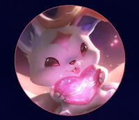
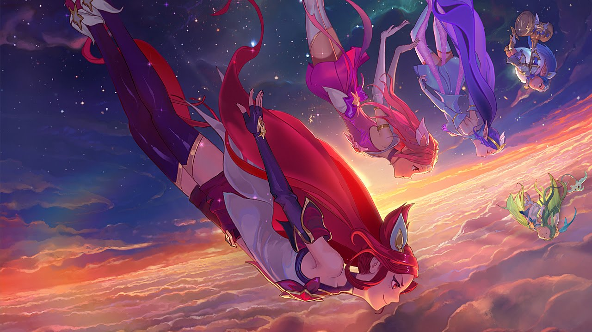

About Ahri
Ahri is a Vastaya (one who can reshape magic into orbs of raw energy) from the Ionian region in League of Legends. She toys with her prey through emotional manipulation before consuming their life essence. Despite this, she does possess empathy as she has memory flashbacks from each soul consumed.
Ahri is a charismatic captain who leads a team of both new and veteran Star Guardians, from the outer edges of the cosmos. Having experienced the pain of losing teammates in the line of duty, she is viciously protective of her “family,” and a strong desire burns within her to ensure no one she cares for ever fades away again. These events have also shaped how she approaches other teams and their captains, especially the less experienced ones like Lux. There’s no more room for patience and understanding in her universe—tough love is all that’s left. Though that be the case, none are immune to Ahri’s own unique charms. She also has an adorable medium named Kiko!
The mischievous Kiko accompanies Ahri as a vulpine embodiment of her charisma… and sass. Even unprompted, Kiko isn’t shy about saying how it really feels, though only Ahri can understand its unique language. As biting as the creature’s manners can sometimes be, it’s not too proud to turn down a good belly rub and cuddle. Just try to refrain from saying, “Aww.”
